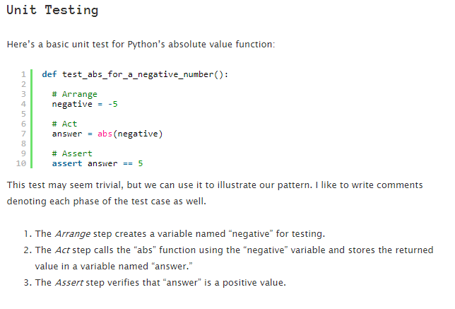

Tutorial on AAA-Testing
Arrange-Act-Assert is a great way to structure test cases. This method is fairly simple and straight forward. It consists of 3 stages Arrange, Act, and Assert.
1. Arrange step should set up the test case. Does the test require any objects or special settings? Does it need to prep a database? Does it need to log into a web app? Handle all of these operations at the start of the test.
For instance, in our calculator for division we arrange the number and operation to be tested. numbers = (18.0, 6.0)
division = Division(numbers)
2. Act should cover the main thing to be tested. This could be calling a function or method, calling a REST API, or interacting with a web page. answer = abs(negative) Here abs in acting on the target's behavior.
3. Assert expected outcomes. This is where you test a case to see if it matches an outcome. Act steps should elicit some sort of response. Assert steps verify the goodness or badness of that response. Sometimes, assertions are as simple as checking numeric or string values. Other times, they may require checking multiple facets of a system. Assertions will ultimately determine if the test passes or fails. In our calculator assert division.get_result() == 3.0 this line checks whether our function output is correct.


NOTE:There are several different kinds of tests, like unit tests, integration tests, or end-to-end tests, but all functional tests do the same basic thing: they try something and report PASS or FAIL.
Source: https://automationpanda.com/2020/07/07/arrange-act-assert-a-pattern-for-writing-good-tests/